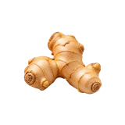

होम / अदरक

अदरक का भाव आज | Ginger Mandi Price Today
अदरक का भाव आज जानना किसानों और व्यापारियों के लिए ज़रूरी है। इस पेज पर इंदौर, जालौर और पाटन जैसी उपलब्ध मंडियों में अदरक के न्यूनतम, मॉडल और अधिकतम भाव क्विंटल और प्रति किलो में देखें। गुणवत्ता, आवक और नज़दीकी मंडियों की तुलना से बेहतर फैसला लिया जा सकता है।
Check available Ginger mandi prices before you sell. Compare minimum, modal and maximum rates with quality, arrivals and nearby market records.
अदरक का भाव कैसे देखें और रेट किन बातों से बदलता है
अदरक ताजी उपज है, इसलिए इसका भाव गांठ की ताजगी, आकार और परिवहन के साथ जल्दी बदल सकता है। अलग मंडियों में स्थानीय आवक का असर अलग दिखता है।
आज का अदरक भाव कैसे देखें
इस पेज की मंडी-वार तालिका में न्यूनतम, मॉडल और अधिकतम भाव देखें। अपनी नज़दीकी मंडी तथा उपलब्ध दूसरी मंडियों के भाव की तुलना करके फैसला लेना अधिक उपयोगी रहता है।
- अपनी मंडी या राज्य चुनकर भाव देखें।
- न्यूनतम, मॉडल और अधिकतम भाव में अंतर समझें।
- पुराने और नए उपलब्ध रिकॉर्ड में फर्क देखकर निर्णय लें।
गुणवत्ता और ग्रेड का असर
गांठ का आकार, maturity, ताजगी, सफाई, टूट-फूट और अधिक रेशा quality में अंतर ला सकते हैं। गीला या चोट वाला माल अलग grade में जाता है।
आवक, मांग और बाजार
बारिश, परिवहन, स्थानीय आवक और जल्दी खराब होने की प्रकृति अदरक के भाव को प्रभावित कर सकती है।
अदरक बेचने या खरीदने से पहले ध्यान रखें
- ताजा और पुराना/कमजोर माल अलग रखें।
- भेजने से पहले परिवहन खर्च जोड़ें।
- क्विंटल और किलो की दर का फर्क समझें।